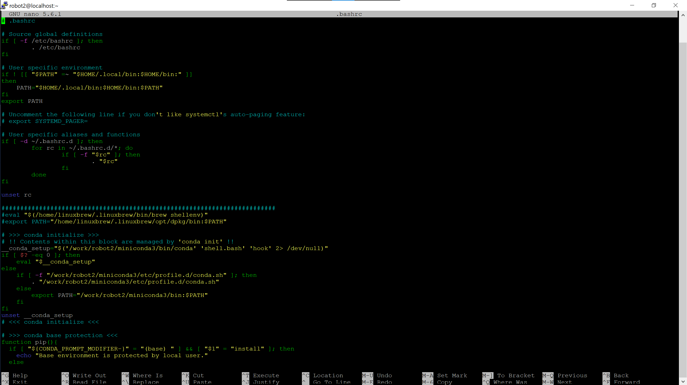

Linux#
After logging into the remote server, you might have observed that the operating system over remote server is neither Windows nor macOS. While most personal computers use Windows or macOS, many remote servers operate on Unix-based systems.
If you’re accustomed to Windows, Linux may seem a bit unfamiliar initially. However, it is a powerful and versatile operating system with many distinctive features.
What is Linux?#
Linux is a free, open-source operating system derived from Unix, renowned for its stability, security, and flexibility.
Unlike Windows or macOS, which rely on graphical user interfaces, Linux primarily uses a command-line interface. This means you perform tasks by typing commands into a shell.
To help you get started with Linux, we’ll cover the basics of the bash shell, introduce essential commands for beginners, and explain the .bashrc and .bash_profile files used for configuration.
What is bash?#
bash is a type of shell—a specific command-line interface that lets users interact with the operating system.
If you’re having trouble understanding, think of bash as similar to the Python interpreter: instead of running Python code, bash runs shell commands and scripts (.sh files).
How to Execute Command?#
Running Commands Directly
Open the Terminal
Type your command
Press Enter
Running Multiple Commands from a Script
Open a .sh file in a text editor
Type your commands in the file
Save the file
Run the .sh file using bash
Basic commands#
Feel free to experiment with the following shell commands to understand what they do. Most of these commands are safe to use, except for rm and kill, which in some cases can be a bit risky—so proceed with caution when trying those.
File and Directory Management#
ls: List files and directories in the current directory
ls
cd: Change directory
cd /path/to/directory
pwd: Print the current working directory
pwd
mkdir: Create a new directory
mkdir directory_name
rm: Remove files or directories
rm file_name
rm -r directory_name
cp: Copy files or directories
cp source_file destination_file
cp -r source_directory destination_directory
mv: Move or rename files or directories
mv old_name new_name
mv file_name /path/to/destination/
Note
Remote server with CLI doesn’t have feature like Recycle Bin, if you rm any file, it will just completely disappear. BE CAREFUL!
Viewing and Editing Files#
cat: Display the contents of a file
cat file_name
less: View file contents with scrolling capabilities
less file_name
nano or vi: Text editors for editing files
nano file_name
vi file_name
System Information#
du: Display disk usage of files and directories
du -h file_name
top: Display real-time system processes
top
ps: Display information about active processes
ps aux
free: Display memory usage
free -h
Note
If you have technical issues such as being unable to save or move files, or if loading a dataset is too slow, the commands listed above might help.
Networking#
netstat: Display network connections and routing tables
netstat -tulpn | grep ':PORT_NUMBER'
Note
If you think a port is being used by someone else, check it to confirm. We’ll talk about port in later chapter.
Others#
kill: Send a signal to terminate a process
kill PROCESS_ID
killall: Sends a signal to terminate all processes with a specified name
killall PROCESS_NAME
screen: Start a new terminal session
screen -S mysession
screen -r mysession
Note
When you disconnect from a remote server, not all processes are terminated. Some may continue running and consume a lot of memory. In such cases, you’ll need to manually kill these processes.
Note
When you disconnect from a remote server, the screen session will remain active. If you want a process to keep running in the background even after you’ve disconnected, consider running it within a screen session.
What is .bashrc and .bash_profile?#
In Linux, .bashrc and .bash_profile are configuration files for the Bash shell that let you customize and manage your terminal environment.
If this sounds complicated, just think of .bashrc and .bash_profile as places where your personalized settings are stored.
Have A Look#
You can use a text editor to view the contents of your .bashrc file:
nano .bashrc
It should look something like this (it doesn’t need to be exactly the same as in the image): 
This may seem complex, but you don’t need to understand every command—just let them be.
Note
It is generally safe to add new lines after the existing commands.
However, unless you fully understand what these commands do, avoid modifying any pre-existing commands in .bashrc or .bash_profile.
Alias#
An alias is a shortcut or a custom command that represents another command or a series of commands. For example:
alias wdir="cd /work/$USER/"
If you add this line to your .bashrc file and then run:
source .bashrc
Next time, you can simply type:
wdir
and it will execute the command cd /work/$USER/.